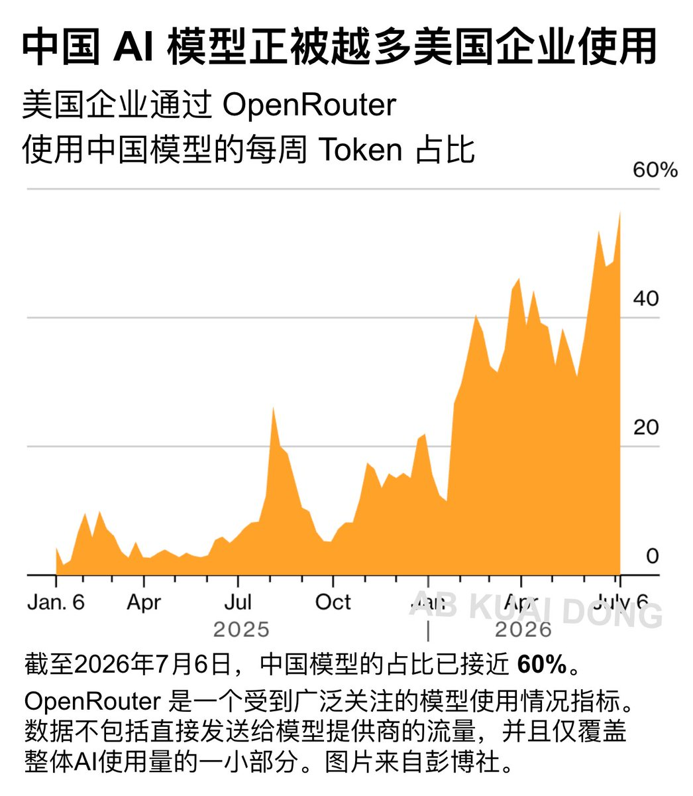
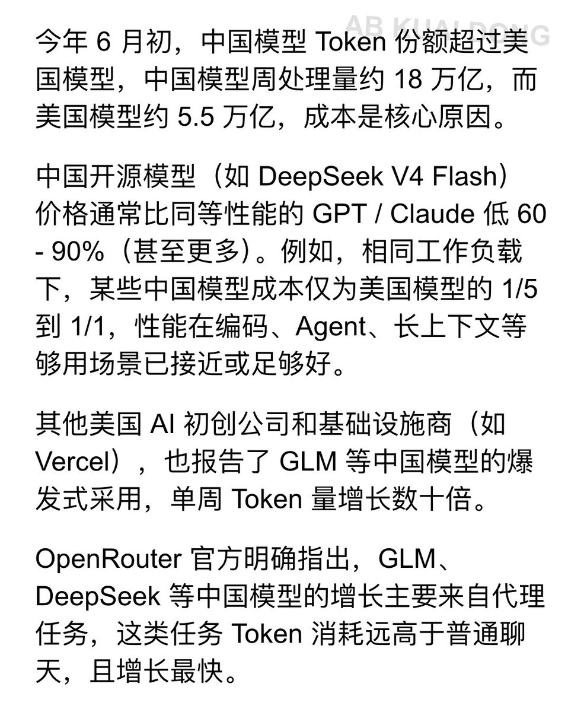

后续就是美国三巨头卷性能，国模卷价格，各有各的美。
ai大模型并不会像某专家说的性能强的赢家通吃，最后打淘汰赛决赛圈起码能剩下三四家不是性能优秀无法替代就是价格低廉的。
现在ai的各种迭代速度是按照月计算的，所以也不好分析出接下来会是什么局面，但是有几家已经摆脱疯狂烧钱的模式并且逐步有了扭亏为盈的迹象，像anthropic和字节跳动
真正能赢得ai大战的不仅仅是靠着烧各路投资人的钱，而是能变成可以看得见的利润。

ai大模型并不会像某专家说的性能强的赢家通吃，最后打淘汰赛决赛圈起码能剩下三四家不是性能优秀无法替代就是价格低廉的。
现在ai的各种迭代速度是按照月计算的，所以也不好分析出接下来会是什么局面，但是有几家已经摆脱疯狂烧钱的模式并且逐步有了扭亏为盈的迹象，像anthropic和字节跳动
真正能赢得ai大战的不仅仅是靠着烧各路投资人的钱，而是能变成可以看得见的利润。


AI 聚合平台 OpenRouter 发现，有越来越多美国企业，正在通过中转站，接入中国的 AI 模型，且 Token 消耗量还在持续攀升。
虽然英文区不少从业者和用户，呼吁继续使用美国国产模型，但是美国企业们却很诚实，对中国 AI 模型需求还在持续扩大。 https://t.co/au5WRruMI0
虽然英文区不少从业者和用户，呼吁继续使用美国国产模型，但是美国企业们却很诚实，对中国 AI 模型需求还在持续扩大。 https://t.co/au5WRruMI0